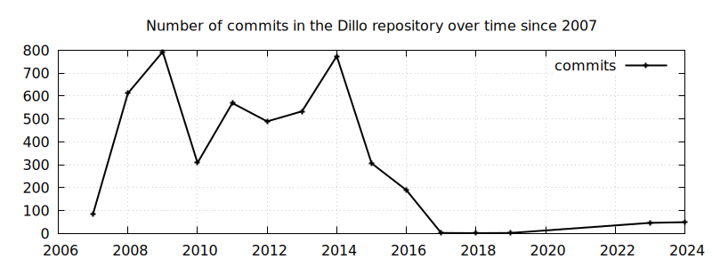
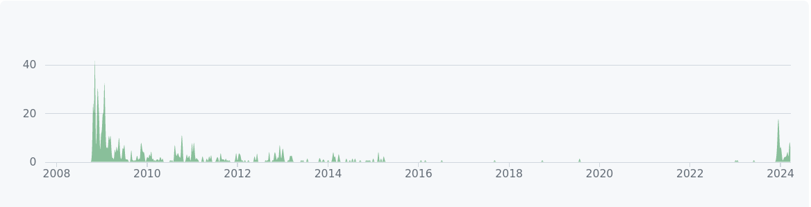

What happened to dillo.org?
Written on 2024-03-31.
Summary
The domain dillo.org expired in 2022 and shortly after someone
bought it and placed a Wordpress blog withspam posts and some content copied
from the original Dillo website.
Please, don't link to dillo.org, use instead the new
website
https://dillo-browser.github.io/.
There is also a copy of the original
old website in case you need to
link to an old page.
Background
First, keep in mind that the domain dillo.org was used to serve
several things:
- The Dillo website since at least 2003.
- The mail server (which included Jorge email, jcid@dillo.org).
- The developer mailing list at lists.dillo.org.
- The Mercurial repository at hg.dillo.org.
So, a failure in the DNS would cause all those services to become
unreachable, specially the mail server. Developers were using
@dillo.org email addresses to communicate among themselves and to
the mailing list.
To understand the development situation of Dillo in 2022, we can take a closer look at the commit frequency. It can be computed from the Git repository[1], but keep in mind that it only covers the timeline after October of 2007, when it was switched from CVS to Mercurial (and later to Git, keeping the history)[2]: 
The development of Dillo decayed from 2014 to 2017. The last 3.0.5 version was released on 2015 and the next 3.1 release never happened. The main architect of the rendering engine, Sebastian Geerken, passed away on September 2016.
The last email I found from Jorge (the main developer of Dillo) was from 2019, recommending to use the development version on the Mercurial repository, instead of waiting for the 3.1 release:
... > According to the info on > https://hg.dillo.org/dillo/raw-file/default/ChangeLog, dillo-3.1 [not > released yet]. > I will probably wait until they release it officially. IMHO, you should get it. It's being stable for years. -- Cheers Jorge.-
From the commit history and the mailing list messages one can reach the conclusion that Dillo was not really being maintained around 2022. So it is not a surprise that nobody was giving much attention to the domain renewal.
Expiration
From the Web Archive you can see that the domain name dillo.org
was parked around Jun of 2022 and shortly after it displayed this
message:
Domain For Sale For more high authority domain names for sale, please contact hello@criticalhit.net
The moment the domain expired it took down the website, but also the mail server used to reach the developers, as well as the mailing list. This difficulted any attempt to reach them to warn about the domain expiration.
A notice was published on Hacker News when the
domain was for sale
on August, and a month later when the
domain was "back".
Interestingly, the user gurjeet offered to buy the domain
back to the developers (thanks!), but they rejected:
I have decided not to sell the domain, and keep it. I have reuploaded the original site from WayBackMachine, ...
However, they didn't upload the original site. They created a Wordpress blog (Dillo cannot render it very well) and copied some content from the original dillo.org, along with some blog posts that read like advertisements. You can track their activity by looking at the site map.
Based on the content of the CriticalHit webpage, I assume they are placing blog posts on dillo.org with a link to someone's page who has paid to get more clicks, exploiting the situation where dillo.org it is still linked by many places. I don't know if there are any laws that could protect us against this type of abuse. The company seems to be based on South Africa law.
Aftermath
In the meanwhile, we have setup a new website based on GitHub pages (so hopefully it won't dissapear soon) at https://dillo-browser.github.io/ which also includes a copy of the original content of the old website as it was before the domain expired.
The repository was transformed into Git and is kept in GitHub[3] at https://github.com/dillo-browser/dillo. The mailing list archives were recovered from the original server and they are available in the new mailing list.
Until we have a better plan on taking back dillo.org, please don't link to that
website as it is not trustworthy. If you can help us, please send and email to the
mailing list
dillo-dev@mailman3.com.
Here is the command to generate the plot in case you want to investigate
on your own: Notice that this plot is very different from the
one in
GitHub, as they only
count contributions from users of GitHub and none of the main developers had an
account there:

This decision is not permanent, but it seems to be a good starting point.
It makes GitHub another single point of failure, but on the other hand, it
allows us to run the CI builds for "free" on several platforms.
% git log --pretty='format:%cd' --date=format:'%Y' | sort | uniq -c \
| awk '$2>2000{print $2,$1}' \
| gnuplot -p -e "set grid; set term pngcairo size 1000,300;\
set output \"commits.png\"; \
set title 'Number of commits in the Dillo repository over time since 2007'; \
plot '-' title 'commits' with linespoints lw 2 lc rgb \"black\""